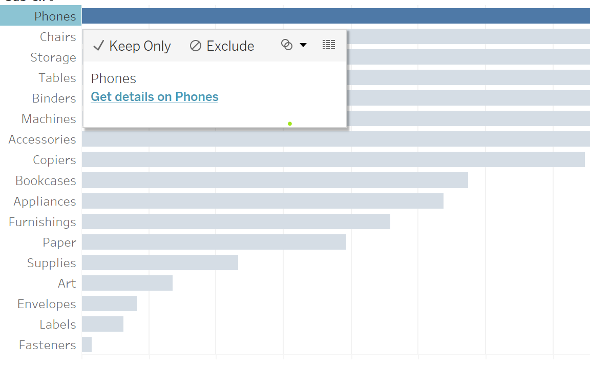
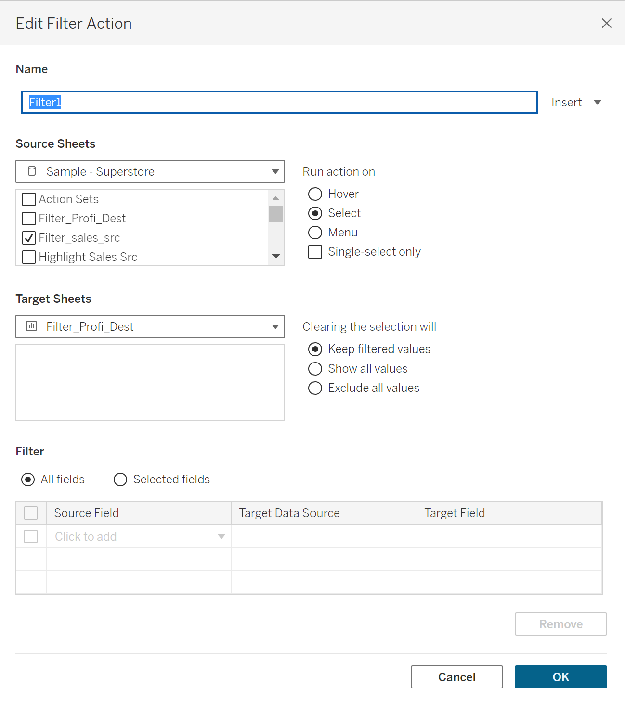
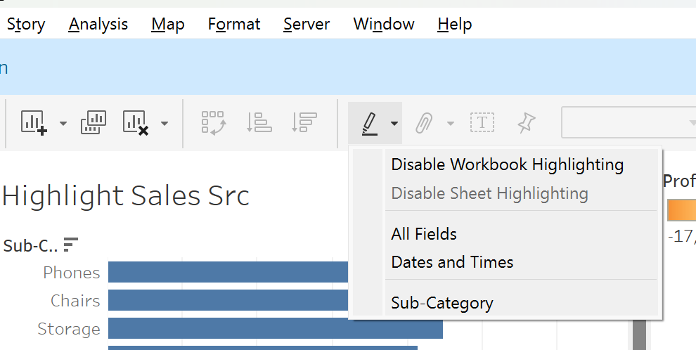

How to turn static dashboards into interactive, click-driven experiences.
"Actions" are interactive features that allow users to dynamically filter, highlight, or navigate between different views within a dashboard by clicking on specific marks on a chart — essentially creating a more engaging and interactive experience for data analysis. Actions add an interactive element to dashboards and let the user build customized views on the fly.
In Tableau, actions are crucial because they allow users to interact dynamically with visualizations on a dashboard, enabling them to explore data more deeply — ultimately creating a more engaging and insightful user experience.
A URL action is a hyperlink that points to a web page, file, or other web-based resource outside of Tableau. When you set up a URL action, you can specify an external URL to be opened when a user clicks on a specific part of the visualization, such as a mark, field, or dashboard element. A URL action builds on this and allows your end users to control what is shown on the web page by passing a value into the URL link when the user interacts with a chart.
Open the worksheet or dashboard where you want to create the action and select
Dashboard > Actions. Click Add Action and choose
URL. Give the action a name and select the source sheet from the
dropdown, then choose the trigger type — here, Menu. Enter the
required URL link, then add dynamic fields to the URL by inserting a value such as
<sub-category> from the insert menu, so the link changes based on
what the user clicks.

Once the link is clicked, it automatically takes us to the required Wikipedia page — adding more context to the visualization and making it more interactive. In this case, selecting "Phones" takes us to the corresponding Wikipedia page.
URL actions can also be used to send an email. For this, the URL link is given as:
mailto:recipient@email.com?subject=Estimated Waiting Time&body=<EmailAlert>
You specify the recipient in mailto: and give a subject and body for the
email. The body can be elaborate, so it's generally given as a user-defined calculated
field — in this case, <EmailAlert>.
This action helps jump from one worksheet to another. With a source sheet (e.g. Sales Insights) and a target sheet (e.g. Profit Insights), click Worksheet > Actions > Add Action > Go to Sheet. Name the action — for example, "Go To Profit Insights" — select the trigger type (Menu), then choose the source and target sheet and click OK.
Once created, clicking on a mark surfaces a link with the action's name. Selecting it takes the user straight to the target sheet.
Selecting data in one sheet filters data in another. The information selected in the source sheet is displayed in the target sheet.
Click Worksheet > Actions > Add Action > Filter. Name the action, select the trigger type, then choose the source and target sheet. The "Clearing the selection will" menu offers three options for how the target sheet should behave after deselecting fields in the source — keep filtered values, show all values, or exclude all values.

For example, selecting the subcategories Machines, Accessories, Copiers, and Bookcases in the sales source sheet filters the profits target sheet to show only those categories.
Selecting data from one sheet highlights related data in another. It allows users to call out specific data points or marks across visualizations when they interact with an element. When a user selects or hovers over a mark in one visualization, related marks in other views can be highlighted, making relationships between data points easier to see.

For example, hovering on the "Phones" subcategory in the source sheet highlights the target sheet with the profit insights for phones. Highlight actions can be created two ways: clicking the pencil icon and choosing the required option, or via Analysis > Highlighters > Sub-Category.
Set actions are a powerful way to interactively modify a set based on user input, such as a selection or hover. A set is a custom grouping of data based on certain conditions or logic, used to isolate specific data points. Sets split data into two groups — an "in" group and an "out" group — and users can change the values in the set by directly interacting with the data.
To create a set, add Sales to Columns, Profit to Rows, and Customer ID to Detail. Then right-click any data point and select Create Set — two sets are created, which you can color as needed. To build the action: go to Worksheet > Actions > Add Action > Change Set Values, name the action, and select the trigger, source sheet, and target set. The "Run action on" menu defines whether selected data points are added to or removed from the set, and the "Clearing the selection" menu defines what happens when the selection is cleared.
A parameter action allows users to interactively control the value of a parameter by selecting elements within the view — marks, fields, or dashboard objects. Parameter actions enable dynamic updates to a dashboard, enhancing interactivity and user experience.
For example, a visualization shows sales distribution across months. Based on the months a user selects, a "Total Sales" label updates dynamically. To build this: create a parameter named Total Sales, then a calculated field (e.g. Total Final Sales) that holds the parameter's value and can be used as a label on another sheet. Add both the source sheet and the label sheet to the dashboard, then create the action via Worksheet > Action > Add Action > Change Parameter — name the action and select the source sheet, target parameter, source field, and aggregation. The label sheet then updates its total based on the months selected.
Actions in Tableau enhance the user experience, making dashboards interactive and insightful by enabling users to drill down into data, filter specific information, and explore different perspectives. Used effectively, they create a more engaging, user-friendly, and informative experience that supports deeper data analysis and better decision-making.